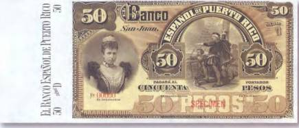
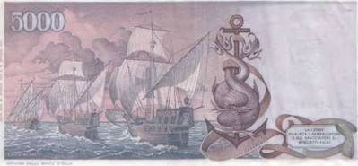
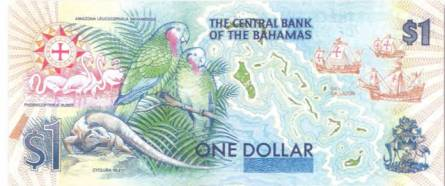
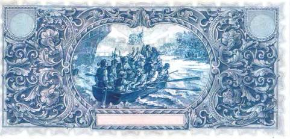
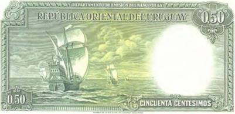
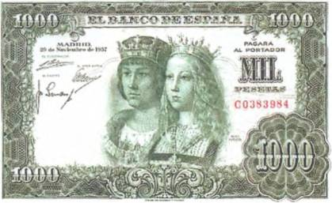
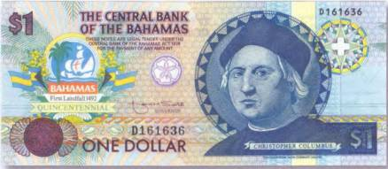
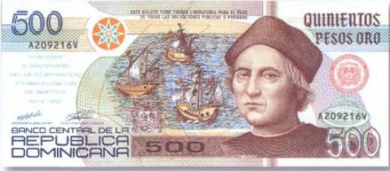
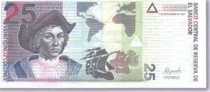

Тайны бумажных денег : Путешествия Колумба

В свое первое путешествие через Атлантический океан Колумб отправился 3 августа 1492 г. из Палоса [12]. Помимо флагманского корабля «Санта-Мария», на котором путешествовал сам Христофор, в его распоряжении находились и два судна поменьше — «Пинта» и «Нинья».

Силуэты этих трех, ставших легендарными кораблей вплетены в сюжеты банкнот многих стран Центральной и Южной Америки — Багамских и Бермудских островов, Доминиканской Республики и Сальвадора. При этом, к примеру, на багамских купюрах изображение флагманского судна Колумба можно видеть даже в гербе этого островного государства. Тематике великого открытия посвящены и бумажные денежные знаки Эквадора. А вот на пуэрториканских 50 песо конца XIX в. первооткрыватель запечатлен на палубе в окружении моряков (рис. 63).
Однако, пожалуй, самым замечательным изображением кораблей, принимавших участие в первой экспедиции Христофора Колумба, может похвастать оборотная сторона все той же итальянской боны в 5000 лир 1971 г. Художнику удалось передать не только стремление человеческого гения к достижению новых целей, но и ту неизвестность, которая ожидала первооткрывателей всех времен и народов за горизонтом известного им мира (рис. 64).

А в пути экспедицию знаменитого генуэзца поджидали не только трудности, но и многое из того, что и по сей день не нашло научного объяснения… Пополнив запасы пресной воды, корабли отплыли от Канарских островов и повернули на запад. Дни сменялись неделями, а вокруг кораблей смельчаков не было ничего, кроме безбрежного океана. Иногда их настигала буря. Тогда небосвод заволакивало черными тучами, а жуткие волны норовили захлестнуть их и отправить ко дну. Но в один прекрасный день мореплаватели обнаружили себя в окружении странной стоячей воды. Так было открыто Саргассово море — часть Северной Атлантики, между Бермудскими островами и Вест-Индией.
Свое название этот район Атлантического океана получил из-за большого скопления там Саргассовых водорослей, свободно плавающих на почти неподвижной поверхности. Последователи же Колумба называли его не иначе как «Море страха» или «Кладбище пропавших кораблей» [13]. Связано это было с тем, что парусные суда XV–XVI вв. с трудом продвигались в зарослях многометровых морских растений и, лишенные способности быстро маневрировать, нередко становились жертвами внезапных бурь.
Кораблям Колумба пришлось провести в Саргассовом море две недели, в течение которых моряки не раз прощались с жизнью. С тех пор о той части Мирового океана зародилось множество самых невероятных и жутких легенд. О дрейфующих там оставленных командами кораблях. Об умирающих с голоду моряках, которые сходили с ума и бросались за борт. О том, как суда постепенно разрушались и тонули, а неупокоенные души принявших мученическую смерть людей превращались в призраков, которые наряду с ужасными обитателями морских глубин делали Саргассово море еще более опасным. О каких именно ужасных обитателях морских глубин шла речь, можно понять, взглянув еще раз на лицевую сторону итальянской боны в 5000 лир. Рядом с образом Колумба показан гиппокамп (от греч. hippocampos — «морской конек»). Это мифическое существо с рыбьим хвостом, телом змеи и протомой (передней частью) лошади населяло морские просторы в древнегреческих сказаниях.
Сегодня мы знаем, что бояться Саргассова моря стоит не больше, чем всех остальных. Скорее им нужно восхищаться. Хотя бы потому, что оно является самым настоящим природным инкубатором и колыбелью жизни для многих видов морских животных организмов. Однако достоверно известно, что по пути в Америку знаменитый мореплаватель был свидетелем и в самом деле загадочных явлений!.. Одно из них произошло с испанцами в печально известном Бермудском треугольнике. На оборотной стороне юбилейной боны Багамских островов в 1 доллар 1992 г. хорошо видна южная оконечность злополучного треугольника, как и все три корабля первооткрывателя Америки (рис. 65).

Конечно, такого понятия, как «Бермудский треугольник», тогда еще не существовало. Оно было придумано только в XX в. Но записи Колумба в его судовом журнале относятся к самым ранним упоминаниям этой аномальной зоны, расположенной у берегов Флориды, Багамских и Бермудских островов. Именно там Колумб и его команда наблюдали загадочное свечение воды. Этот пока не до конца изученный феномен встречается в Бермудском треугольнике достаточно часто. И даже был сфотографирован с орбитальных спутников.
О не менее удивительном событии Колумб сообщал в своем отчете для испанского королевского двора. Речь там шла о загадочном вихре, который в июне 1494 г. потопил сразу три корабля [14]его флотилии. Но прежде того редкий природный феномен некоторое время вращал их вокруг своей оси. При этом море вокруг кораблей оставалось совершенно спокойным.
А вот когда испанцы находились в Саргассовом море, то однажды ночью наблюдали вдали таинственный свет. В своих записях Колумб сравнил его с дрожащим огоньком свечи. Но, пожалуй, самым интересным можно считать столкновение Христофора Колумба с… НЛО! Яркий шарообразный объект, по словам мореплавателя, сделал вокруг флагманского корабля несколько кругов, а потом пропал в водах океана. Как это могло выглядеть? Чтобы представить себе это, достаточно взглянуть на оборотную сторону уругвайской боны в 50 чентезимо 1935 г. (рис. 66).
Водяной знак там уж очень похож на неопознанный летающий объект, как его описывал в своих дневниках Колумб. Не правда ли? Впрочем, это были не единственные странности, которые довелось наблюдать у берегов Нового Света испанцам, а позже и португальцам. Например, в сентябре 1494 г. неподалеку от Испаньолы (сегодня Гаити) Колумб видел морское чудовище и расценил это как знамение надвигающейся бури.
12 октября того же года испанцы случайно наткнулись на один из Багамских островов, которому Колумб дал имя Сан-Сальвадор, что переводится как «Святой Спаситель». Уже только на основании этого названия можно догадаться, с какой радостью ими была встречена земля. Изображение высаживающихся на берег испанцев можно встретить на боне Эквадора в 20 сукре 1920 г. (рис. 67).

28 октября команда высадилась на северо-восточном побережье Кубы, а 6 декабря корабли генуэзца достигли северного берега Гаити. Тем самым было сделано открытие, значение которого трудно переоценить и которое в корне изменило судьбы миллионов людей не только в Новом, но и в Старом Свете. В Испанию из своего первого путешествия в Америку Колумб вернулся 15 марта 1493 г. на корабле «Нинья». Флагман «Санта-Мария» в Европе уже больше никто никогда не увидел. Еще в декабре 1492 г. он сел на рифы у берегов Гаити. И испанцам не оставалось ничего другого, как разобрать корабль на доски, из которых было построено первое в Америке поселение европейцев — форт «Навидад» (назван в честь праздника Рождества). В Испании Колумба встречали как героя. А королевская чета, Фердинанд Арагонский и Изабелла Кастильская, наградили его званием адмирала. Сдержали они свое слово и относительно найденных Колумбом новых земель. Отныне он становился вице-королем всех территорий, которые открыл и еще только собирался открыть, а свой титул имел право передать по наследству. Правда, уже в 1499 г. монопольное право Колумба на открытие новых земель было отменено. Портреты Фердинанда Арагонского и Изабеллы Кастильской украсили испанскую купюру в 1000 песет 1957 г. (рис. 68).


Кстати сказать, когда в Испании «всем миром» собирали средства на первую экспедицию Колумба, королева Изабелла не пожалела и своих драгоценностей.
В результате последующих трех экспедиций (1493–1496, 1498–1500, 1502–1504) Колумбом были открыты острова Доминика и Ямайка, острова Тринидада (ныне Тринидад и Тобаго) и земли Гондураса, Гваделупа и Пуэрто-Рико. Его корабли бросали якорь у «Москитового берега» (Никарагуа) и у «Золотого берега» (Коста-Рика). Ему же приписывают и открытие Колумбии, хотя в действительности он лишь разведал путь к ее землям. С тех пор эта страна носит его имя (в честь Колумба назван и столичный федеральный округ в США — Колумбия), а денежная единица Коста-Рики и Сальвадора «колон» тоже названа в его честь. 10 мая 1503 г., возвращаясь из последнего путешествия к побережью Южной Америки, им были обнаружены и Каймановы острова, которые Колумб прозвал «черепашьими».

С образом Колумба во все времена связывали происхождение самых разных мистерий. К примеру, в Палосе, откуда на запад отплывала первая экспедиция испанцев, есть колодец, из которого путешественники запасались водой для всех трех кораблей. Его каменное перекрытие в виде шатра сохранилось вплоть до наших дней. А вот вода в колодце иссякла будто бы в тот самый день (20 мая 1506 г.), когда перестало биться сердце знаменитого генуэзца.
Интересно, что до сих пор неизвестен ни один прижизненный портрет великого мореплавателя. Тот, что украсил лицевую сторону юбилейной однодолларовой боны Багамских островов 1992 г., позаимствован с картины, которую приписывают кисти художника Гирландайо (рис. 69).
Этот портрет Христофора Колумба сегодня хранится на его родине, в музее Генуи. Он же помещен и на доминиканской банкноте в 500 песо 1992 г. (рис. 70).
В то же время несколько стилизованный рисунок знаменитого путешественника с купюры Сальвадора в 25 колон 1999 г. имеет схожие черты с портретом Христофора Колумба, созданным итальянским живописцем Себастьяно дель Пиомбо (рис. 71).


Относительно официальной даты открытия Америки не все было понятно и прежде. В мае 2001 г. в лондонской газете «Таймс» появилась статья итальянского историка и писателя Руджеро Марино, в которой он утверждал, что Колумб сплавал в Америку семью годами раньше официальной даты (1492), то есть где-то между 1485 и 1486 гг. В качестве доказательства своей теории он приводит надпись на карте некоего Райса (см. ниже), датированной первой четвертью XVI в. Она гласит: «Эти берега были найдены в году 890 Арабской эры неверным из Генуи». Знакомые с арабским летосчислением знают, что «890 г. арабской эры» — это 1485 г. по христианскому календарю.
Далее в статье утверждается, что Колумба в Америку во второй половине 80-х гг. XV в. отправил папа римский Иннокентий VIII якобы за золотом для финансирования крестовых походов. На могиле этого главы католической церкви в соборе Святого Петра в Ватикане имеется и в самом деле довольно странная надпись, которая приписывает славу открытия Нового Света именно ему. А хорошо известно, что Иннокентий VIII скончался (1492) еще до того, как знаменитый генуэзец отплыл на поиски западного пути в Индию.